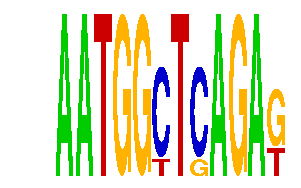

family_21 |
|---|
|  |
| Download PWM |
| Download instances (motifs) |
| Show motif distribution |
Query_ID | Query_Consensus | Subject_Name | Source_DB | Subject_ID | Length | Orientation | Offset | Divergence | Overlap | Subject_Consensus |
|---|---|---|---|---|---|---|---|---|---|---|
| family_21 | AATGGCTCAGAG | CATTGTYY | JASPAR | PF0049 | 8 | reverse-complement | -4 | 0.078 | 4 | CATTGTTC |
| family_21 | AATGGCTCAGAG | NANOG | HOCOMOCO | NANOG_HUMAN.H10MO.S | 8 | as given | -3 | 0.577 | 5 | TTTAATGG |
| family_21 | AATGGCTCAGAG | ISL1 | HOCOMOCO | ISL1_HUMAN.H10MO.D | 7 | as given | -3 | 0.645 | 4 | GYTAATG |
| family_21 | AATGGCTCAGAG | YCATTAA | JASPAR | PF0058 | 7 | reverse-complement | -2 | 0.656 | 5 | TCATTAA |
| family_21 | AATGGCTCAGAG | Sox2 | JASPAR | MA0143.3 | 8 | reverse-complement | -3 | 0.698 | 5 | CCTTTGTT |
| family_21 | AATGGCTCAGAG | SOX15 | HOCOMOCO | SOX15_HUMAN.H10MO.D | 7 | reverse-complement | -3 | 0.791 | 4 | CWTTGTT |
| family_21 | AATGGCTCAGAG | YATTNATC | JASPAR | PF0097 | 8 | reverse-complement | -4 | 0.797 | 4 | TATTNATC |
| family_21 | AATGGCTCAGAG | SOX9 | JASPAR | MA0077.1 | 9 | as given | -4 | 0.821 | 5 | NAACAATRG |
| family_21 | AATGGCTCAGAG | SYATTGTG | JASPAR | PF0071 | 8 | reverse-complement | -3 | 0.828 | 5 | CCATTGTG |
| family_21 | AATGGCTCAGAG | Sox6 | JASPAR | MA0515.1 | 10 | reverse-complement | -5 | 0.873 | 5 | CCATTGTTTT |
Sequence | Start_position (from start) | Start_position (from end) | Average conservation | Best conservation score | Instance_with_best_CS | Best_Z-score | Instance_with_best_ZS | Strand |
|---|---|---|---|---|---|---|---|---|
| chr10:25161100-25162291 | 682 | 694 | 0.0134167 | 0.051 | AATGGYTCAGAK | 14.270282 | AATGGCTSAGAK | 1 |
| chr10:20200820-20202200 | 407 | 419 | 0.00433333 | 0.01 | AATGGCTSAGAK | 14.270282 | AATGGYTCAGAK | 1 |
| chr10:62937600-62940500 | 1218 | 1230 | 0.14375 | 0.195 | AATGGYTCAGAK | 14.270282 | AATGGCTSAGAK | 1 |
| chr8:94650500-94651972 | 1125 | 1137 | 0.000166667 | 0.001 | AATGGCTSAGAK | 14.270282 | AATGGCTSAGAK | 1 |
| chr18:5070162-5071162 | 677 | 689 | 0.00616667 | 0.017 | AATGGCTSAGAK | 14.270282 | AATGGCTSAGAK | 1 |
| chr4:150668800-150673200 | 2240 | 2252 | 0.00858333 | 0.013 | AATGGYTCAGAK | 14.270282 | AATGGYTCAGAK | 1 |
| chr5:130354359-130355359 | 748 | 760 | 0.0166667 | 0.024 | AATGGCTSAGAK | 14.270282 | AATGGYTCAGAK | 1 |
| chr1:75343200-75345100 | 573 | 585 | 0.10125 | 0.125 | AATGGYTCAGAK | 14.270282 | AATGGYTCAGAK | 1 |
| chr2:17545474-17547000 | 52 | 64 | 0.0141667 | 0.022 | AATGGYTCAGAK | 14.270282 | AATGGCTSAGAK | 1 |
| chr7:16516500-16518200 | 1347 | 1359 | 0.15775 | 0.178 | AATGGCTSAGAK | 14.270282 | AATGGYTCAGAK | 1 |
| chr4:32102700-32104008 | 159 | 171 | 0.0105 | 0.021 | AATGGCTSAGAK | 14.270282 | AATGGYTCAGAK | 1 |
| chr7:56094100-56096800 | 959 | 971 | 0.00075 | 0.003 | AATGGYTCAGAK | 14.270282 | AATGGCTSAGAK | 1 |